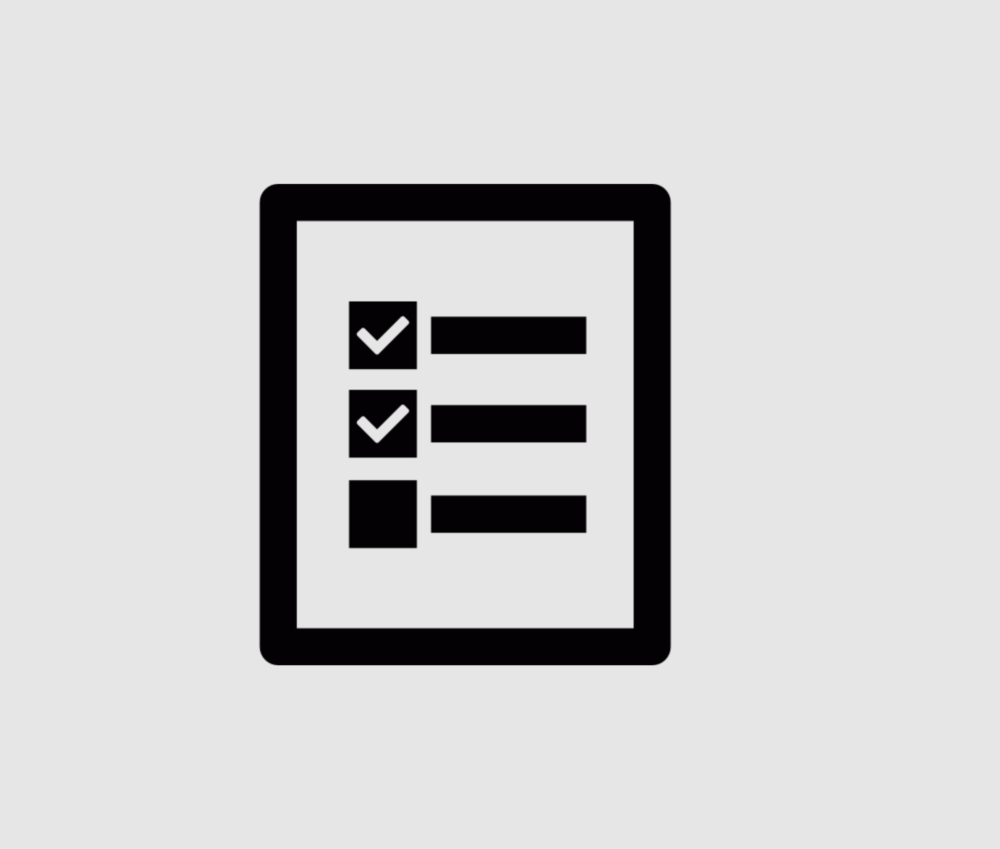
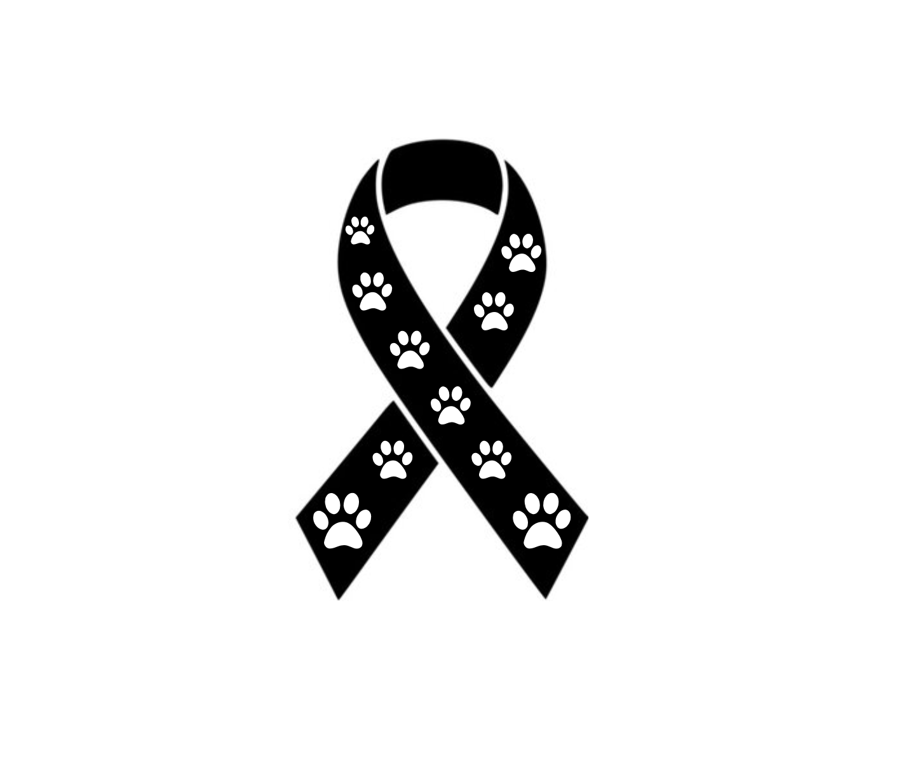
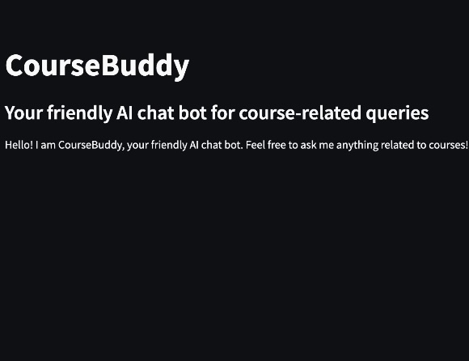
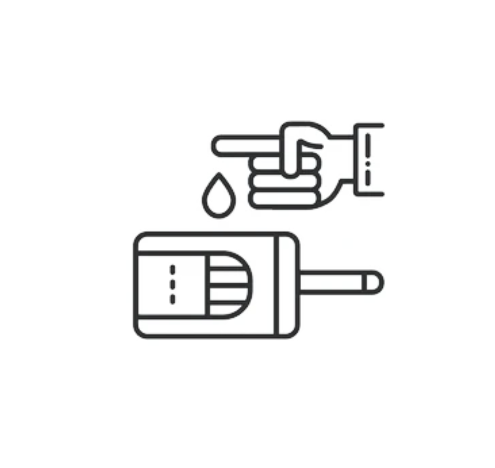

Research Wesbite Redesign
Rebuilt a research website with a focus on scalability and usability by redesigning the UI, updating the color system, and refactoring the site into a dynamic, data-driven architecture. Automated publication updates and implemented reusable components to reduce maintenance overhead and support long-term growth.
Taskade Chrome Entension
Taskade is a full-stack Chrome extension that simplifies task management by syncing with Google Calendar and Gmail APIs. Users can stay organized with automatic nightly reminders. By integrating directly with Google Calendar, Taskade helps users structure their schedules and time-block their day more effectively.
Canine Cancer
This project automates the generation of patient summaries from veterinary clinical reports using OCR and LLMs. The pipeline extracts structured data from scanned PDFs and generates readable summaries using GPT, Claude, and LLaMA models. The final product includes a black-box interface designed for seamless integration into clinical workflows.
TL;DW
Too Long; Didn't Watch is an AI-powered Streamlit app that helps users digest long-form educational YouTube videos by summarizing the content, generating cheatsheets, customizing personalized quizzes and finding related content from the transcript.
CourseBuddy
A context-aware chatbot designed for UCI students, offering quick access to course details and tailored responses to their queries. Featuring a robust course information database, Langchain retriever, and prompt template, the chatbot delivers efficient and personalized assistance.
Sleep States
Predicted sleep onset and wakeup events based on an accelerometer data. A sequence labeling/time series event detection problem, employing time series analysis algorithms and deep learning architectures. Conducted on randomly sampled subjects, we built an efficient ML model.
Detecting Diabetes
Leverages a comprehensive decade-long dataset from 130 US hospitals, focusing on patterns related to early readmission. Using data imputation, oversampling to address class imbalance, feature selection, ensemble modeling, and neural networks to build an efficient classification model.
Menu Analysis
Analysis conducted on different online menus from restaurants in India using Natural Language Processing Techniques and explored different ideas for a web-based prototype to help our client find similarities between competing restaurants menus based on words, phrases and tokens.
Evade and Avoid
A flight simulator for UAVs with control laws to avoid obstacles in the aircraft's trajectory. We enhanced the autopilot model by adding a robust state machine and a waypoint following algorithm, resulting in visually and computationally effective aircraft maneuvers while avoiding potential explosions.